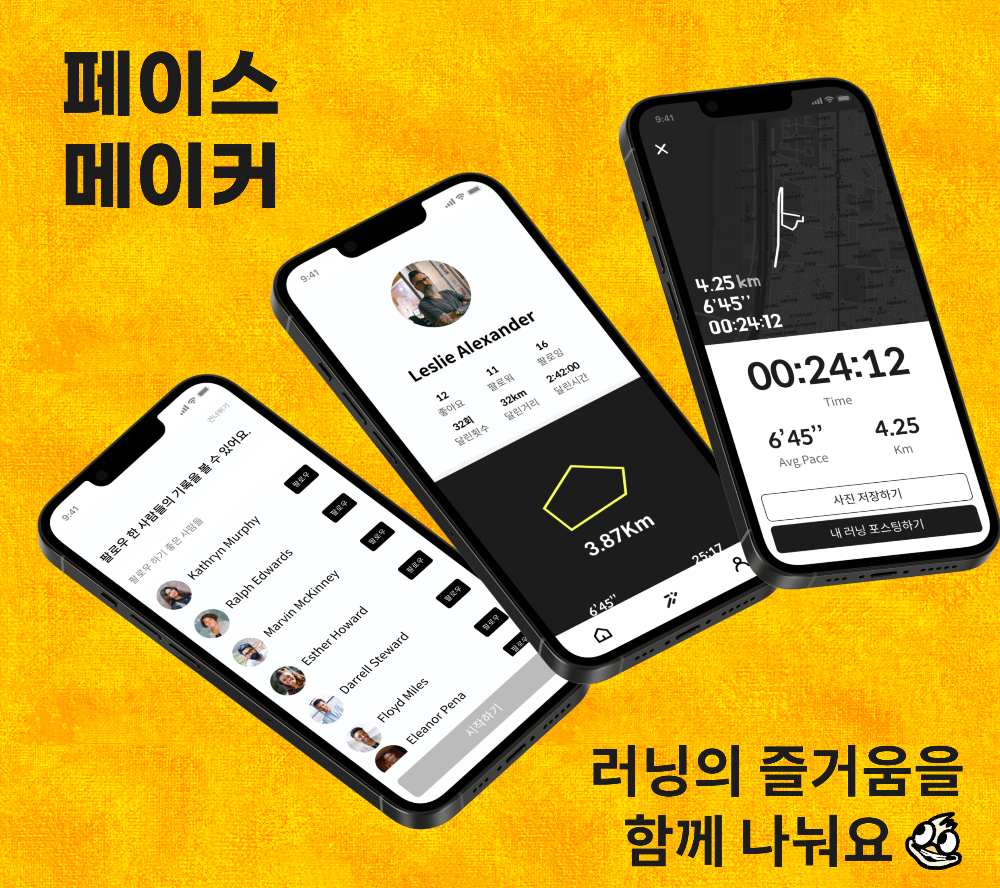

인스타 라이브 × 본디 캐릭터 → 러닝 카드
1
라이브 러닝 UI 재설계
라이브 러닝은 SNS라는 본질에서 인스타그램 라이브 개념을 차용했습니다. 누군가가 지금 달리고 있다는 실시간성을 강조하고, 응원을 보내는 인터랙션을 직관적으로 만들었습니다.
2
러닝 카드 컨셉 도입
달리기 포스트는 본디(Bondee)의 캐릭터 패키지에서 영감을 받아 러닝 카드라는 개념으로 접근했습니다. 달리기 기록을 마치 선물 패키지처럼 시각적으로 포장해, 피드에서 "보는 즐거움"을 만들었습니다.
3
무드 전환 — 힙하고 액티브한 영 톤
달리기라는 테마에 맞게 전체 비주얼을 힙하고 액티브하고 영한 무드로 전환했습니다. 컬러, 타이포그래피, 아이콘 시스템을 전면 교체하며 브랜드 아이덴티티를 재정립했습니다.
Before

After